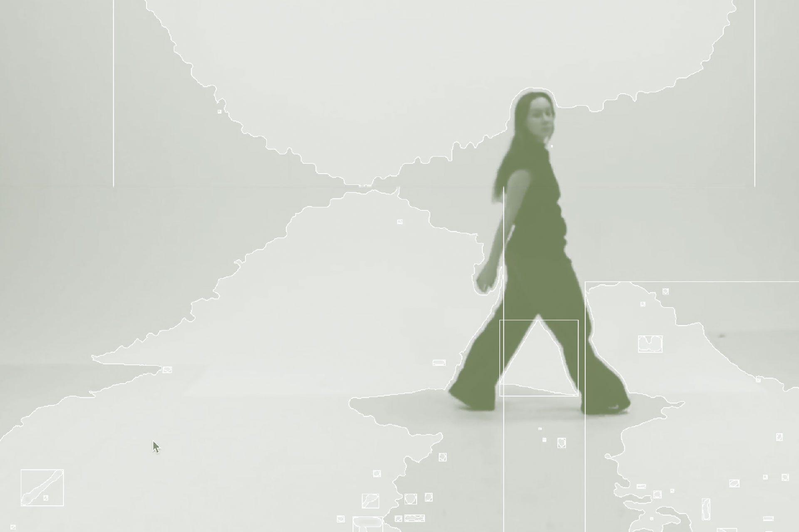
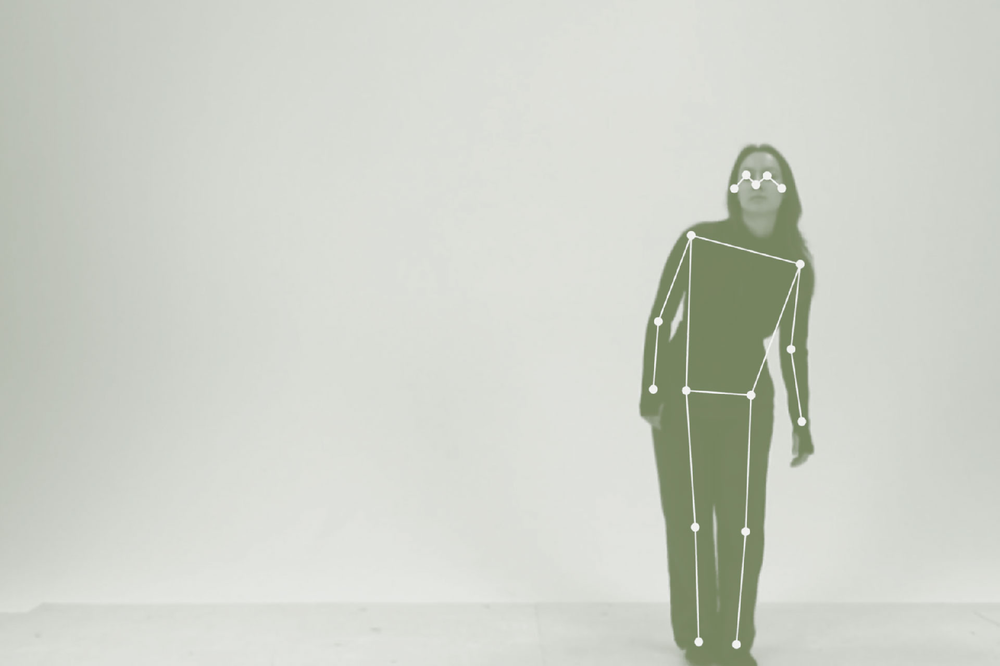
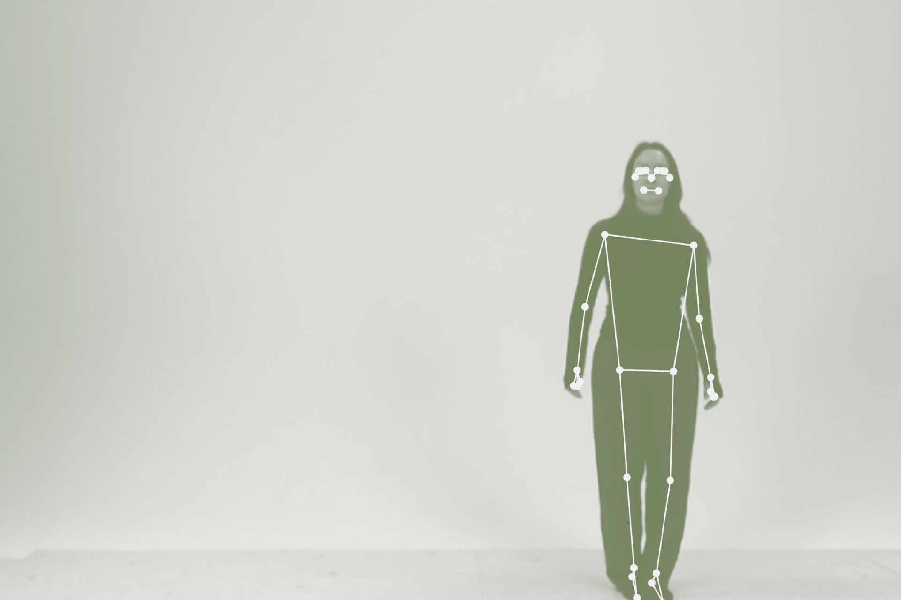
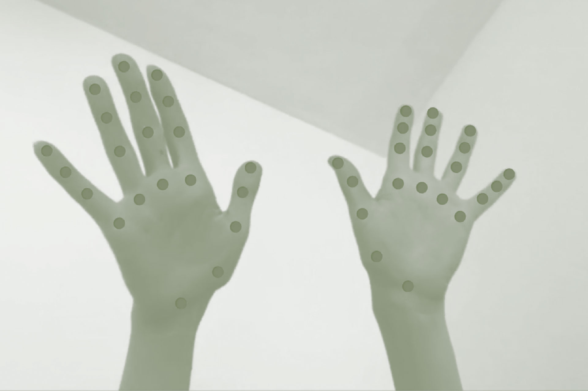
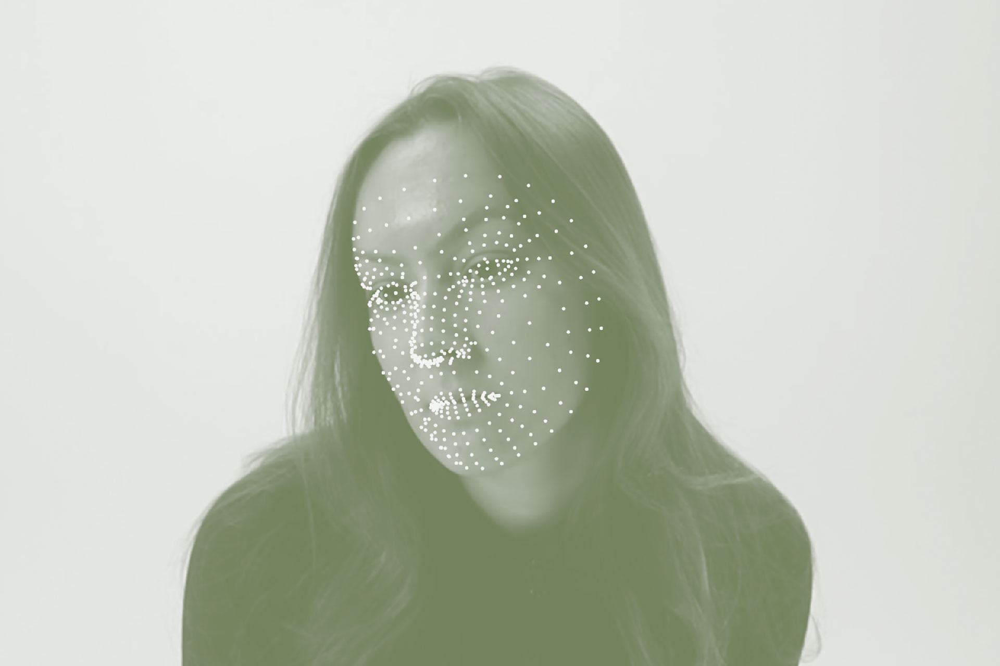

Today’s field of graphic design is ever so tethered to computers. Opaque software performances distance designers from their tools. Corporeal computer interactions regulate movement and produce static, controlled bodies. This disembodied setting of design tools was not always the case. In the craft history of design practice, bodies were inseparable from the actual process. Embodied Interfaces returns kinetic bodies to design practice. The research meshes fragments from adjacent fields of interaction design and dance to build a theory for embodied interfaces. Choreography is used as a method to subvert standard technological movements. The design space defines new relations: computers as props, surrounding space as a stage, and designers as performers. This performative act reveals a body, deconstructed by computer vision algorithms, that becomes an input for interaction. Working between bodies, movement data, and typography, the following question guides this thesis: how do embodied interfaces influence the composition and form of generative typography?
Technology
OpenCV⤤     
A porous collection of typographic experiments, installations, and objects form a choreographic toolkit. The proposed counter-choreographies are inefficient, exaggerated, and unfamiliar, bringing awareness to how we move or do not move with computers. The resulting performative design tools address composing strategies and formal strategies. Typography emerges as an unstable medium that can be formed, moulded, and choreographed, and inherits a corporeality despite its digitality. The iterative experimental framework results in a two-person collaborative typesetting tool and typographic sculptures molded by hands on screen. These performative processes critically embrace new technologies into a designer’s toolkit. In embodied interaction, designers may break away from invisible technological performances and – through movement – enliven formal outcomes and collective practice. It is the imperative of graphic design to untether from our desktops and step onto the collaborative stage of space, bodies, and action.